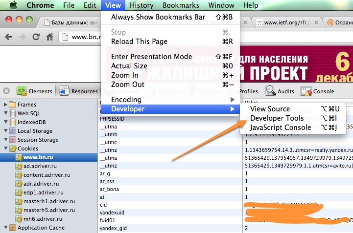
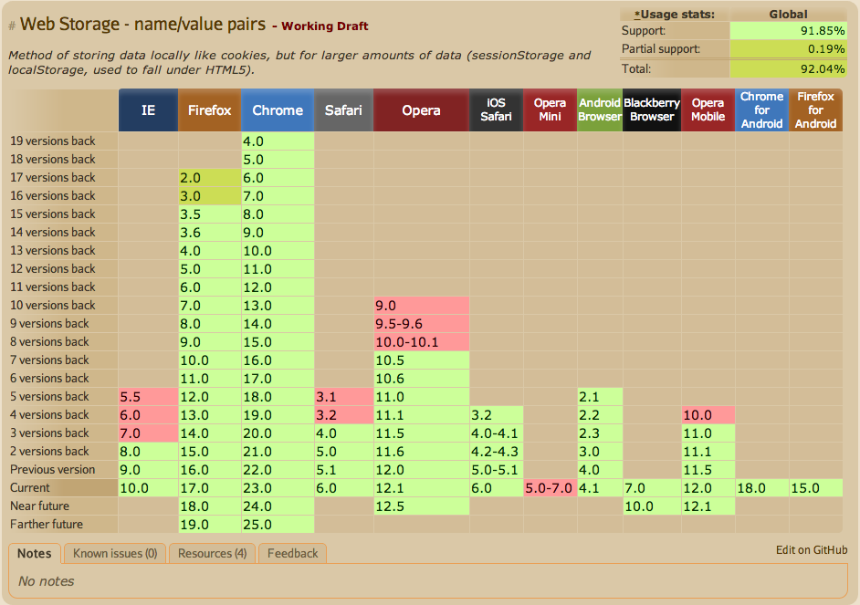
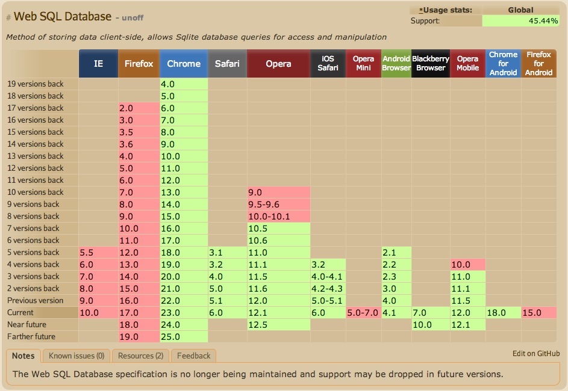
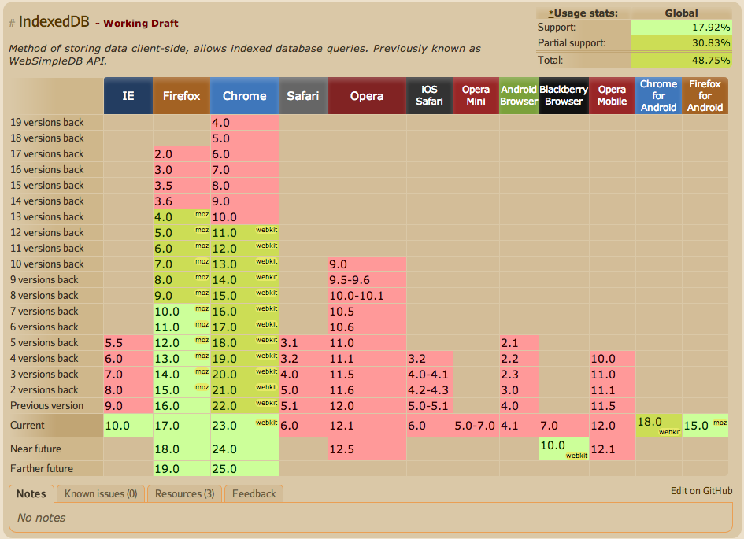

Базы данных: введение, часть девятая
Илья Тетерин
2012-11-26
(use arrow keys or PgUp/PgDown to move slides)
Илья Тетерин
2012-11-26
(use arrow keys or PgUp/PgDown to move slides)
Пример: обычная, традиционная "корзина" на веб-сайте ...
Предыдущая версия HTML4.0 была сформирована в 1997-ом году.
Разработчику доступны два способа хранения информации:
В случае базы данных на сервере: пользователь нажал на ссылку, внутри произошла запись в базу, результаты выдали пользователю.
Пользователь пришел в следующий раз, идем в базу, достаем данные, возвращаем пользователю.
Чем хорошо - с какой бы машины пользователь не зашел - база одна и на сервере, всегда одни и те же данные.
В случае cookie - сервер возвращает пользовательскому браузеру http заголовок "set-cookie" - небольшую (4 килобайта) строку.
ozon.ru: Set-Cookie:rt=xxxxxxxxxxxxxxxxxxxxx; domain=ozon.ru; expires=Mon, 26-Nov-2012 08:34:03 GMT; path=/; HttpOnly
Браузер у себя сохраняет ее на диск и прикладывает к последующим запросам на этот сервер.
Request URL:http://vk.com/feed Request Method:GET Cookie:remixvkcom_done=1; remixlang=0; remixdt=0; remixsid=xxxxxxxxxxxxxxxxxxxxxxxxxx; remixflash=11.5.31; remixseenads=1 Host:vk.com
Максимальная длина cookie - 4 килобайта, 20 cookie на один домен. Описание - rfc2109.txt
Cookie выдается только на тот домен, с которого она была установлена (security).
Используется для авторизации, хранения настроек, отслеживания пользователя.
Активно ставят cookie рекламодатели: пример с сайта bn.ru:
Как открыть девелоперскую консоль в Chrome: View / Developer / Developer Tools.
База:
А давайте попробуем "what-if": соберем две конфигурации (Intel vs CPU) и посмотрим что дешевле?
База одна - только одна корзина ... даже в разных браузерах.
Cookie:
Собрал дома "корзину", пришел на работу - а ее не видно .. cookie лежат в домашнем браузере.
Кстати: посмотрел на windows 7 компьютере
C:\Users\homeuser\Cookies - 9700 файликов с разными cookies
Мы обязаны выдавать нужную cookie на каждый запрос к сайту.
... понятно, почему долго стартует IE ...
w3.org спецификация Web Storage - находится в разработке.
Вводятся новые механизмы для хранения состояния:
SessionStorage:
key-value хранилище внутри каждой страницы браузера
(поддержка what-if сценариев).
LocalStorage:
устойчивое key-value хранилище внутри браузера на уровне browser - host
(кеш на стороне пользователя емкостью в мегабайты).
Эти новые механизмы доступны на уровне javascript скриптов внутри браузеров.
interface Storage {
// количество пар в хранилище
readonly attribute unsigned long length;
// получить имя ключа в позиции index или null
DOMString? key(unsigned long index);
// получить значение по ключу key или null
getter DOMString getItem(DOMString key);
// записать пару key - value
// Может кинуть QuotaExceededError
setter creator void setItem(DOMString key, DOMString value);
// удалить значение по ключу key
deleter void removeItem(DOMString key);
// очищает всё хранилище
void clear();
};
Спецификация переменных и доступа
[NoInterfaceObject]
interface WindowSessionStorage {
readonly attribute Storage sessionStorage;
};
Window implements WindowSessionStorage;
[NoInterfaceObject]
interface WindowLocalStorage {
readonly attribute Storage localStorage;
};
Window implements WindowLocalStorage;
Как использовать
<script>
window.sessionStorage.setItem("session.1", "33");
window.localStorage.setItem("local.1", "38");
</script>
Методы setItem / removeItem / clear порождают события, на которое клиентский код может подписаться.
[Constructor(DOMString type, optional StorageEventInit eventInitDict)]
interface StorageEvent : Event {
// изменившийся ключ
readonly attribute DOMString key;
// предыдущее значение
readonly attribute DOMString? oldValue;
// новое значение
readonly attribute DOMString? newValue;
// полный url источника события
readonly attribute DOMString url;
// какое хранилище - localStorage / sessionStorage
readonly attribute Storage? storageArea;
};
dictionary StorageEventInit : EventInit {
DOMString key;
DOMString? oldValue;
DOMString? newValue;
DOMString url;
Storage? storageArea;
};
localStorage - устойчивое и переживет перезапуск браузера...
... можем показать данные с того места, где браузер выключился ...
Пример: в хранилище посещаемость лекций, хочу видеть графики ...
Данные в виде ключ-значение: (data.X;N), где X - номер лекции, N - количество студентов
("data.01", "33")
("data.02", "34")
("data.03", "27")
...
Библиотечка полезных функций...
// будем рисовать при помощи jquery
<script src="./files/jquery.js"></script>
<script src="./files/jquery.sparkline.js"></script>
getAllKeys = function() { // все ключи в массив
var st = window.localStorage;
var data = [];
for (var i = 0; i < st.length; i++)
data.push(st.key(i));
return data;
};
isData = function(key) { // нас интересуют только data. ключи
return key && key.startsWith('data.');
};
loader = function(key) { // по ключу - значение
return window.localStorage.getItem(key);
};
loadData = function () {
// взять ключи,
// отобрать нужные,
// отсортировать,
// загрузить значения
return getAllKeys().filter(isData).sort().map(loader);
};
// функция рисования графиков - на входе серия чисел
drawGraphs = function (items) {
$('.dynamicsparkline').sparkline(items,
{height:200, width:200, lineWidth: 3, chartRangeMin: 0});
$('.dynamicbar').sparkline(items,
{type: 'bar', barColor: 'green', height:100, barWidth:10, chartRangeMin: 0});
// где отобразить график
var t = document.getElementById('plaindata');
t.innerHTML = '';
for (var i = 0; i < items.length; i++) {
var d = document.createElement('div');
d.innerHTML = '' + i + ': ' + items[i];
t.appendChild(d);
}
};
$(document).ready(function() {
drawGraphs(loadData());
});
<table border="1"><tr>
<td><span class="dynamicsparkline">Loading..</span></td>
<td><span class="dynamicbar">Loading..</span></td>
<td><span id="plaindata">Loading..</span></td>
</tr></table>
... кстати, у нас же есть событие storage ...
// создадим новую строку и подложим в container
report = function(val) {
var incomingRow = document.createElement('pre');
incomingRow.innerHTML = val;
document.getElementById("container").appendChild(incomingRow);
};
// соберем сообщение, отобразим в таблицу, перерисуем графики
displayStorageEvent = function(e) {
var logged = "key:" + e.key + ", newValue:" + e.newValue
+ ", oldValue:" + e.oldValue + ", url:" + e.url
+ ", storageArea:" + e.storageArea;
report(logged);
this.drawGraphs(this.loadData());
};
// зарегистрируем наш слушатель событий
window.addEventListener("storage", displayStorageEvent, true);
Источник событий
// собираем данные с формы и кладем в хранилище
newLine = function() {
var k = document.getElementById("key").value;
var v = document.getElementById("val").value;
window.localStorage.setItem(k, v);
}
// удаляем строку из хранилища
removeLine = function() {
var k = document.getElementById("key").value;
window.localStorage.removeItem(k);
}
// простая HTML форма для событий
key: <input type="text" name="key" id="key"/>
val: <input type="text" name="val" id="val"/>
<input type="button" value="new" onclick="newLine()"/>
<input type="button" value="remove" onclick="removeLine()"/>
<a href="st.insert.html">reload</a>
cd (folder with samples) // это простой web server, который отдает файл из каталога // по http://localhost:8000/ python -m SimpleHTTPServer
Потом открыть страницу слушателя (на fluffypulser.ru) ...
Потом открыть страницу источника (на fluffypulser.ru)
И начать добавлять / удалять данные ...
Полезно: на странице "источник" открыть View / Developer / Developer Tools и там Resources / Local Storage ...
Данные "кешируются" у пользователя ...
Страница может отображать данные стартуя с кэша - еще до получения данных от сервера.
Обновления одной страницы разлетаются в несколько других страниц (Model-View-Controller).
Пользовательский интерфейс отсмотра котировок - одно окно получает поток данных с сервера, а в других окнах - таблицы, графики етс.
Список контактов - 225 человек - полное имя, краткое имя, url аватарки (fcFriends). Хранятся draft-ы всех сообщений, компу вы писали, но не отправили (im_draftКТО_КОМУ). Хранится список сообщений кому вы писали (posts_sent).
Как хранить JSON объект в storage?
Сериализуй в строку и храни.
var obj = ...;
window.localStorage.setItem('myObj', JSON.stringify(obj));
...
var myObj = eval(window.localStorage.getItem('myObj'));
Пример с vk.com
{ "version":"1353914341_20869",
"list":
{
"15460_":[
"Дмитрий Качмар",
"http://cs5605.userapi.com/u15460/e_cc303041.jpg",
"Дмитрий","dc06a8cb15918e9fab6507e6c",2],
"3084297_":[
"Женя Смольникова",
"http://cs989.userapi.com/u3084297/e_363e3b7c.jpg",
"Женя","214938825f9accb164749ae8a",1],
...
Код и принципы работы - аналогичны.
Хранилище живет только в одной закладке браузера.
Пользователь может работать с разными наборами пар в разных окнах (what-if сценарии).
В пределах одной закладки пользователь может уходить и возвращаться на страницу.
Пример: session storage (на fluffypulser.ru)
if (typeof(window.localStorage) === "undefined") {
// "Your browser does not support HTML5 storage";
Поддержка в каких браузерах?
w3.org: Web SQL Database - набор APIs для клиент-сайд баз использую SQL...
db.readTransaction(function (t) {
t.executeSql('SELECT title, author FROM docs WHERE id=?', [id],
function (t, data) {
report(data.rows[0].title, data.rows[0].author);
}
)});
Спецификация "заброшена" с комментарием:
Все реализации используют Sqlite - этого мало для реализации стандарта ...
w3.org: Indexed Database API - хранить много объектов локально - поиск по ключам, множественные значения для ключа, порядок обхода ключей ... NoSQL ...
Статьи на habrahabr.ru по тэгам IndexedDB и web sql database ...


SQLite is a software library that implements a self-contained, serverless, zero-configuration, transactional SQL database engine.
SQLite is the most widely deployed SQL database engine in the world.
Для чего использовать?
Полноценная база без сетевого доступа.
Размеры - до террабайтов.
Отличный "транспорт" - создали на большом компьютере, выложили один файл через http, скачали на Android - вот у нас и расписание занятий для всех.
Формат файлов для использования в программах.
Популярна в гаджетах - PDA, mp3 плееры етс.
SQL база для использования в тестах.
Создадим руками базу.
pulser-osx:sqlite pulser$ sqlite3 morning.db SQLite version 3.6.12 Enter ".help" for instructions Enter SQL statements terminated with a ";" sqlite> create table users (id integer primary key, name varchar(255)); sqlite> insert into users values (1, 'robin'); sqlite> insert into users values (2, 'batman'); sqlite> .exit pulser-osx:sqlite pulser$ ls -la -rw-r--r-- 1 pulser wheel 4096 26 ноя 14:30 morning.db sqlite> create index idx_user_name on users(name); pulser-osx:sqlite pulser$ ls -la -rw-r--r-- 1 pulser wheel 6144 26 ноя 14:31 morning.db
// Получить отчет в CSV для загрузки в Excel? Легко.
osx:sqlite pulser$ sqlite3 --csv morning.db \
'select * from users order by 2 desc'
1,robin
2,batman
// Получить копию данных в текстовом формате?
osx:sqlite pulser$ sqlite3 morning.db '.dump'
BEGIN TRANSACTION;
CREATE TABLE users (id integer primary key, name varchar(255));
INSERT INTO "users" VALUES(1,'robin');
INSERT INTO "users" VALUES(2,'batman');
CREATE INDEX idx_user_name on users(name);
COMMIT;
// Добавить новую строку
osx:sqlite pulser$ sqlite3 morning.db \
'insert into users values (3, "batgirl")'
// Что получилось?
osx:sqlite pulser$ sqlite3 --csv morning.db \
'select * from users order by 2'
3,batgirl
2,batman
1,robin
А как из программы туда достучаться?
#!/usr/bin/python
import sqlite3 as lite
import sys
con = None
try:
con = lite.connect('morning.db')
cur = con.cursor()
cur.execute('SELECT SQLITE_VERSION()')
data = cur.fetchone()
print "SQLite version: %s" % data
for row in cur.execute('select * from users'):
print row
except lite.Error, e:
print "Error %s:" % e.args[0]
sys.exit(1)
finally:
if con:
con.close()
osx:sqlite pulser$ ./morning.py
(1, u'robin')
(2, u'batman')
(3, u'batgirl')
Книга: Pro HTML5 Programming By Peter Lubbers, Brian Albers, and Frank Salim.
site /
перевод на ozon.ru / примеры кода
Habrahabr.ru: поиск по HTML5
w3.org спецификации:
Web Storage,
Web SQL Database
и Indexed Database API
Учебник по SQL? SQL Tutorial by w3schools.com
Базы начинались с один компьютер - одна база, потом разнесли на один сервер - N терминалов, потом сделали сервера базы - сервера бизнес-логики - терминалы, потом добавился вебсервер и доступ из браузера...
... а теперь база (и SQL и Key-value) живет прямо в браузер.
Использование локальной базы - дает новые возможности - перенос части данных и логики в клиента.
Но еще предстоит понять как правильно и с пользой это использовать.
Сложности - система будет требовать синхронизации структуры и данных тысяч клиентов с центральным хранилищем ...